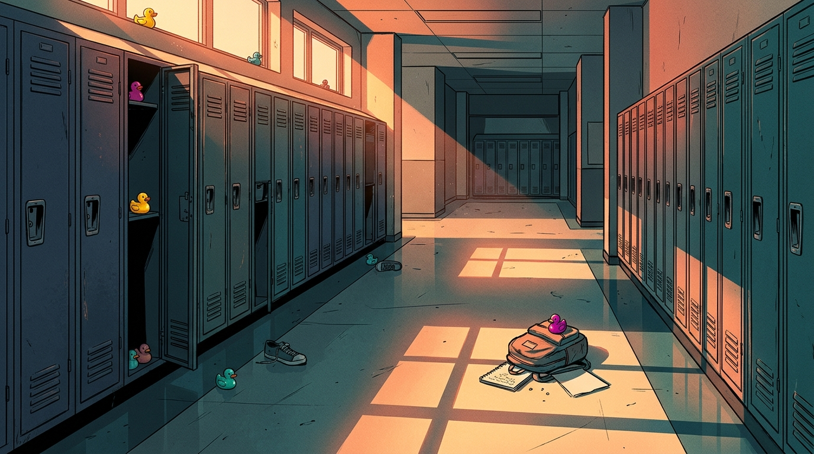

Mon
3
Gr. 8 West
Tue
7
+ Cafeteria
Wed
18
Hits Gr. 7
Thu
34
All 3 Grades
Fri
55
14% of School!
Incoming Dispatch · 400 Students Total
Phones are ringing off the hook in the main office
- By Friday afternoon, nearly 1 in every 7 students at Centennial Junior High is home sick.
- Worried parents are calling clinics asking for penicillin (antibiotics).
- One classmate in the building is undergoing cancer treatment with a weakened immune system.
- The principal needs answers and a Monday Morning Game Plan before the doors reopen.
Your Job Today: First, examine the crime scene clues. Next, build your Page 1 Outbreak Toolkit with your desk partner. Then solve Case 55 solo on Page 2.

Centennial Junior High: Empty lockers by Friday bell, and tiny resin ducks everywhere. (Click image to zoom)